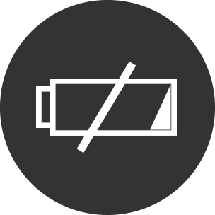
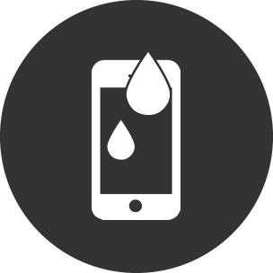

Reparación de Pantalla
Cambiamos y reparamos pantallas dañadas con repuestos originales y garantía incluida.

Cambiamos y reparamos pantallas dañadas con repuestos originales y garantía incluida.
Restablece la autonomía de tu dispositivo con baterías originales certificadas.
Solucionamos daños por líquidos con equipos especializados para recuperar tu dispositivo.
Solucionamos daños por líquidos con equipos especializados para recuperar tu dispositivo.
"Excelente servicio, mi iPhone quedó como nuevo después del cambio de pantalla. ¡Muy recomendado!"
"Mi MacBook sufrió un derrame de agua y en iFix lograron salvarlo. ¡Gracias por su profesionalismo!"
"Rápido y eficiente. Cambiaron la batería de mi iPhone en menos de 30 minutos. ¡Increíble atención!"
"Rápido y eficiente. Cambiaron la batería de mi iPhone en menos de 30 minutos. ¡Increíble atención!"
En iFix nos especializamos en ofrecer un servicio técnico de alta calidad, asegurando que cada dispositivo Apple sea reparado con el máximo cuidado y precisión. Nuestro proceso consta de las siguientes etapas:
El tiempo varía según el tipo de reparación. En general, un cambio de pantalla o batería puede demorar entre 30 y 60 minutos, mientras que reparaciones más complejas pueden tardar de 24 a 48 horas.
El tiempo varía según el tipo de reparación. En general, un cambio de pantalla o batería puede demorar entre 30 y 60 minutos, mientras que reparaciones más complejas pueden tardar de 24 a 48 horas.
El tiempo varía según el tipo de reparación. En general, un cambio de pantalla o batería puede demorar entre 30 y 60 minutos, mientras que reparaciones más complejas pueden tardar de 24 a 48 horas.
Sí, trabajamos únicamente con repuestos originales certificados para garantizar la calidad y durabilidad de la reparación.
Todas nuestras reparaciones incluyen una garantía de hasta 6 meses, dependiendo del tipo de servicio realizado.
No es necesario, pero recomendamos agendar una cita para evitar tiempos de espera innecesarios.
Somos iFix, un equipo de técnicos especializados en la reparación de dispositivos Apple. Con más de 10 años de experiencia en el sector, nos hemos consolidado como un servicio técnico de confianza para miles de clientes.
Nos apasiona la tecnología y trabajamos con un enfoque en la calidad y la satisfacción del cliente. Nuestro objetivo es ofrecer soluciones rápidas, efectivas y garantizadas para que tu dispositivo vuelva a funcionar como nuevo.
Además, estamos comprometidos con el medio ambiente. Promovemos la reparación en lugar del reemplazo para reducir el impacto de los residuos electrónicos.